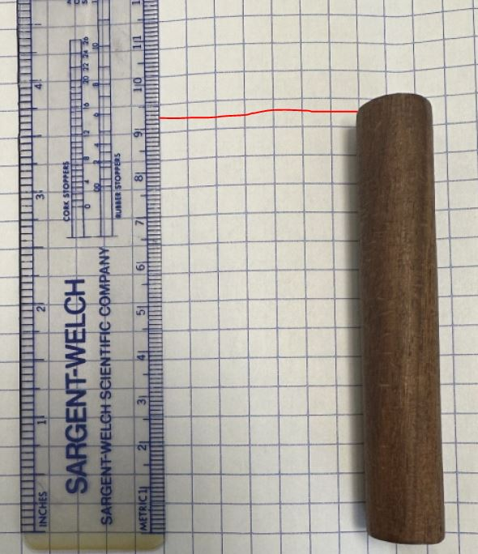
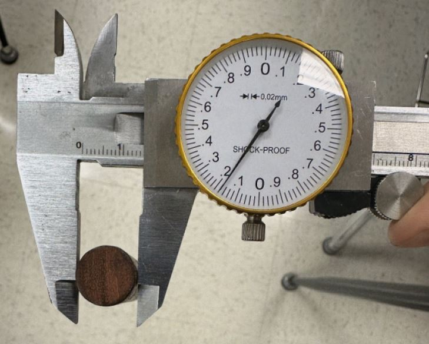

What is the Surface Area in Square Centimeters?
Steps to Solve:
-
Recall the formula for the surface area of a cylinder:
Surface Area = 2πr² (area of the two circles) + 2πrh (area of the rectangular body, which has a height "h" and a width equal to the circumference of the circle (2πr)). -
Observe the dimensions:
- Diameter of the cylinder: 1.418 cm (so the radius is 0.709 cm).
- Height of the cylinder: 9.3 cm.
-
Calculate the surface area of the circles:
Area of one circle = π × (0.709)² ≈ 1.579 cm².
For two circles: 2 × 1.579 ≈ 3.158 cm². -
Calculate the surface area of the body:
Rectangle area = circumference × height = π × diameter × height = π × 1.418 × 9.3 ≈ 41.429 cm². -
Add the areas:
Total Surface Area ≈ 3.158 + 41.429 ≈ 44.59 cm².